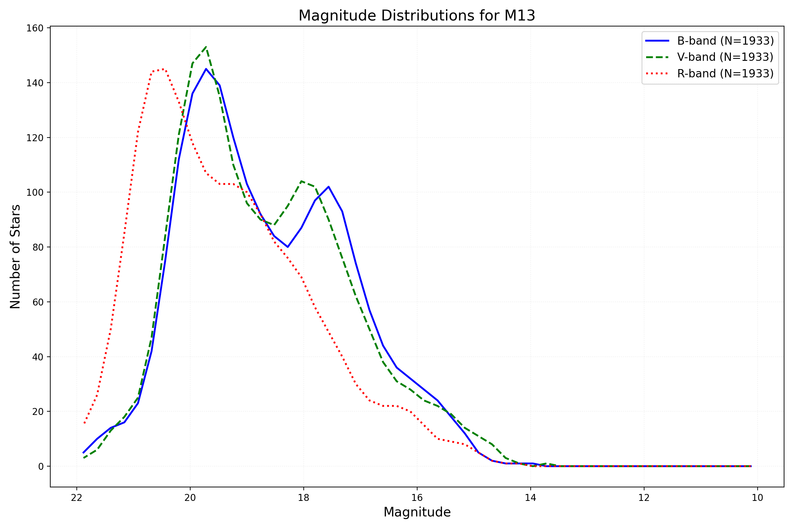
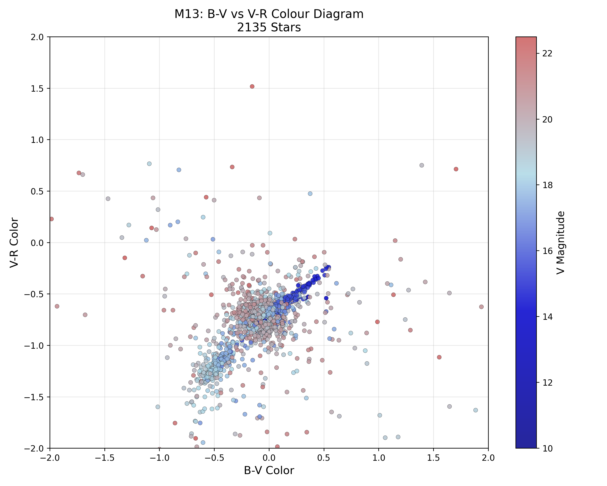
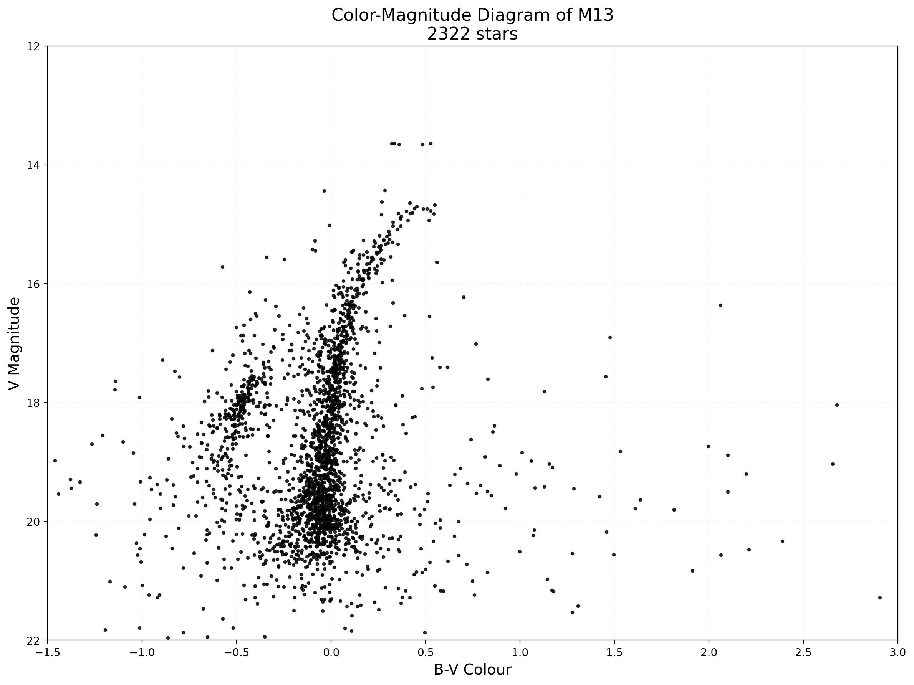

Summary
This project was carried out at the Observatorio del Teide, Tenerife, and focused on observational astrophysics using both the Celestron C14 Edge HD and IAC-80 telescopes. Over seven nights, I performed imaging of galaxies, open clusters, and nebulae. The project developed my understanding of photometry, filter use, and data reduction, culminating in the production of colour–magnitude and Hertzsprung–Russell diagrams from cluster observations.
Equipment Used
- Celestron C14 Edge HD telescope
- Luminos 23 mm 82° eyepiece
- QHY-163 M/C camera
- 0.7× reducer
- Software: MaxIm DL, CWIPI, TLImage, LTImage, SAOImage
- IAC-80 Telescope — Focal Length 902 mm | Aperture 0.82 m (820 mm) | Resolution 4096×4112 px | Pixel 15×15 µm (FOV ≈ 0.39°×0.39°)
Observations
| Night | Object | Type | RA | Dec | Filters | Time / s | Repeats | Telescope | Approx. Time / WEST |
|---|---|---|---|---|---|---|---|---|---|
| 2 | M13 | Globular Cluster | 16h41m41.4s | +36°27′27″ | B, V, I, R | 180, 90, 60, 180 | 5 | Celestron | 01:00 |
| 3 | M20 | Trifid Nebula | 18h02m23s | −23°01′48″ | B, O III, H α | 40, 60, 60 | 3 | Celestron | 02:30 |
| 4 | Abell 39 | Planetary Nebula | 16h27m33.7s | +27°54′33″ | V, O III | 300, 300 | 3 | IAC-80 | 01:20 |
| 4 | M7 | Open Cluster | 17h53m51s | −34°37′34″ | B, V, I, R | 8,8,8,20 | 5 | Celestron | 03:00 |
| 4 | NGC 6960 | Diffuse Nebula | 20h45m38s | +30°42′30″ | H α, O III, V, R | 200, 200, 200, 200 | 3 | IAC-80 | 05:00 |
| 5 | M104 | Galaxy | 12h39m59s | −11°37′23″ | B, V, R | 180, 180, 180 | 5 | Celestron | 22:30 |
| 6 | M63 | Galaxy | 13h15m49s | +42°01′46″ | B, V, R | 180, 180, 180 | 5 | Celestron | 00:30 |
| 6 | NGC 7331 | Galaxy | 22h37m04s | +34°24′57″ | B, V, R | 60, 60, 60 | 4 (5)* | Celestron | 01:30 |
* Intended to do 5 but tracking failed after 4
Filter Characteristics
| Filter | Max λ / nm | Min λ / nm | Centre λ / nm |
|---|---|---|---|
| B | 500 | 440 | 445 |
| V | 509 | 551 | — |
| R | 590 | 810 | 658 |
| I | 810 | 1000 | 806 |
| H α | 651 | 661 | 656 |
| O III | 495 | 501 | 500 |
| L | 400 | 700 | Broad |
Image Gallery


Analysis
Magnitude Distribution
The magnitude distribution graph shows the range of stellar magnitudes obtained from photometric analysis of M13, providing insight into the completeness and depth of the dataset.
B–V vs V–R Plot
The colour–colour diagram (B–V vs V–R) displays the relationship between filter bands, illustrating stellar temperature variation within the field.
Hertzsprung–Russell Diagram
The Hertzsprung–Russell diagram produced from the same photometric data shows the clear main sequence and evolved stars within the cluster, aligning with expected theoretical distributions.